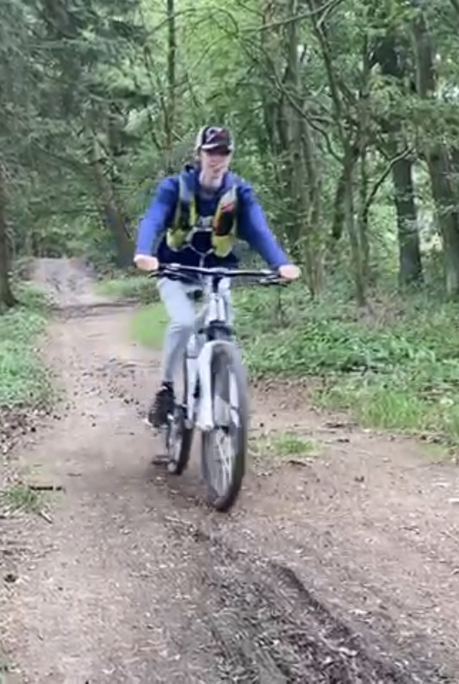

Wie ben ik?
Mijn naam is Jaren. Ik ben 17 jaar oud en ben bezig met de opleiding software developer en ik zit in mijn eerste jaar. Ik woon in een dorpje genaamd Roelofarendsveen. Een van mijn hobby's is Gamen (natuurlijk). Ik heb thuis een computer die ik zelf heb gemaakt. Ik speel daar games op met me vrienden. Nog een van mijn hobby's is fietsen. Ik kom uit Nederland dus ik doe het natuurlijk vaak en toen ik naar school moest gaan fietsen werd ik er een soort goed in. Op een vakantie in Duitsland hadden ik en me familie mountain-bikes gehuurd en dat vond ik echt leuk dus toen ik thuis kwam had ik een mountain-bike gekocht en had ik opeens nog een hobby.
